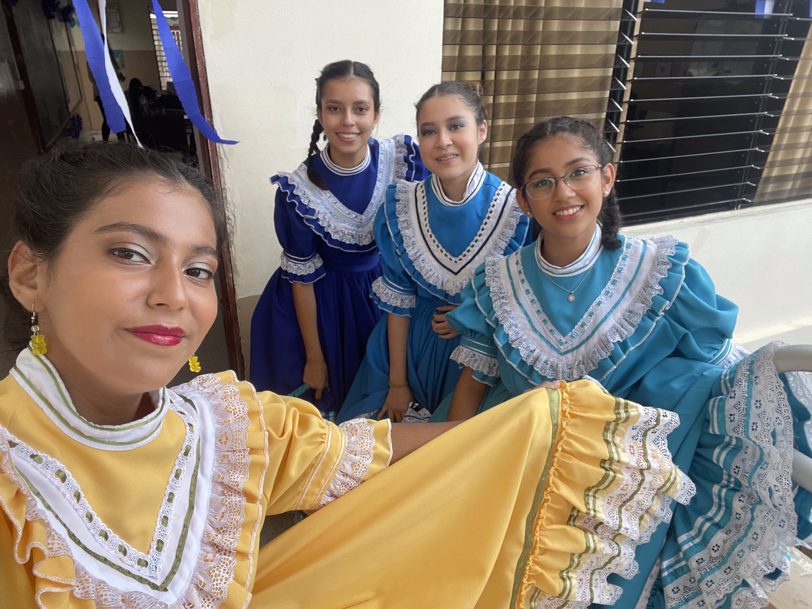

¿Las Mates y Ciencias?
Cuarto grado fue retador, las matemáticas y ciencias no eran para mí, pero todo terminó
bien. Llegamos a sexto grado y tuvimos que hacer la PAES para poder pasar a Tercer Ciclo
(séptimo a noveno grado) y aprobé ambos exámenes.
Inicio Tercer Ciclo y con ello muchas cosas. En esta etapa las matemáticas y ciencias se
volvieron en mi fuerte, y se convirtieron en mis materias favoritas. Llego noveno grado y con
ello la pandemia, nos quedamos en casa y tratamos de adaptarnos al encierro y a la nueva
modalidad de clases.
Termino Tercer Ciclo e inició la última etapa del colegio, el Bachillerato. Mi primer año
no fue divertido, ya que lo vivimos en casa. El último y segundo año fue uno de mis favoritos,
hice nuevos amigos y finalmente pude participar en los bailes del 15 de septiembre, los cuales
siempre me han gustado.
